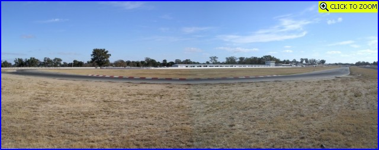
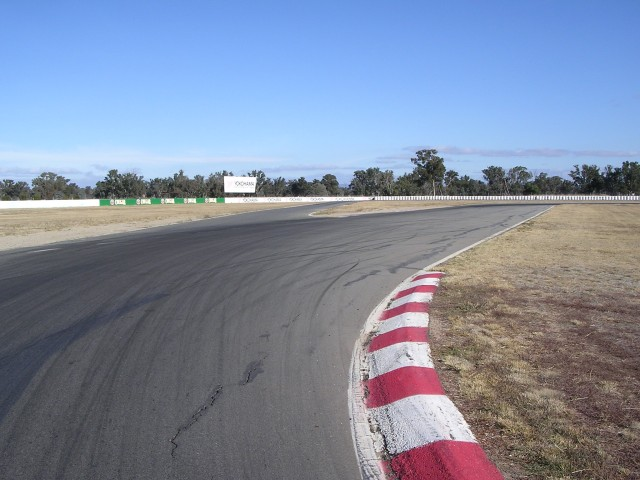
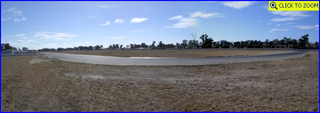
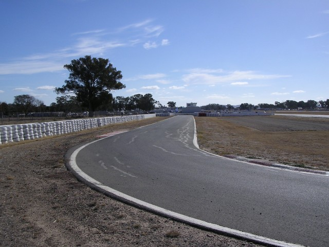
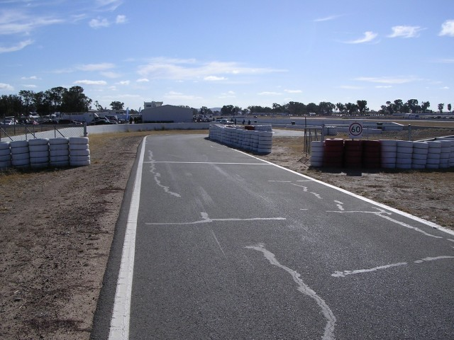
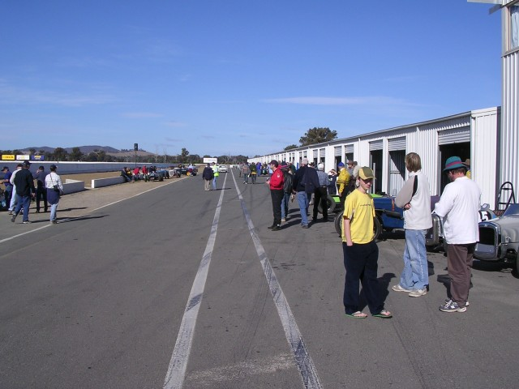
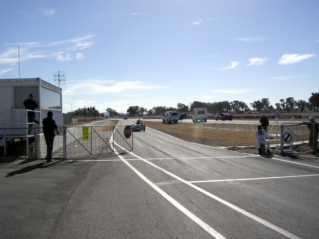

Numbers and arrows on the map represent the location as direction of where the photographs were taken. Click on hyperlinks above to view the photographs.
Winton - Turns 9 & 10, Pits
|| Contents || Start - Esses - Turn 1 | Turns 2 to 8 | Turns 9 & 10 / Pits || Home ||
Numbers and arrows on the map represent the location as direction of where the
photographs were taken. Click on hyperlinks above to view the photographs.
Return to racingcircuits.net's Photo Archive Main Index

16 - Turn 9. [Click
here to zoom in]

17 - Pit entry road to left on the exit of Turn 9.

18 - Turn 10. [Click
here to zoom in]

19 - Pit entry.

20 - Chicane at Pit entry.

21 - Pit lane.

22 - Pit exit on the long circuit.
Photographs and Text ©Neil Fackerell. Reproduced here with kind permission.